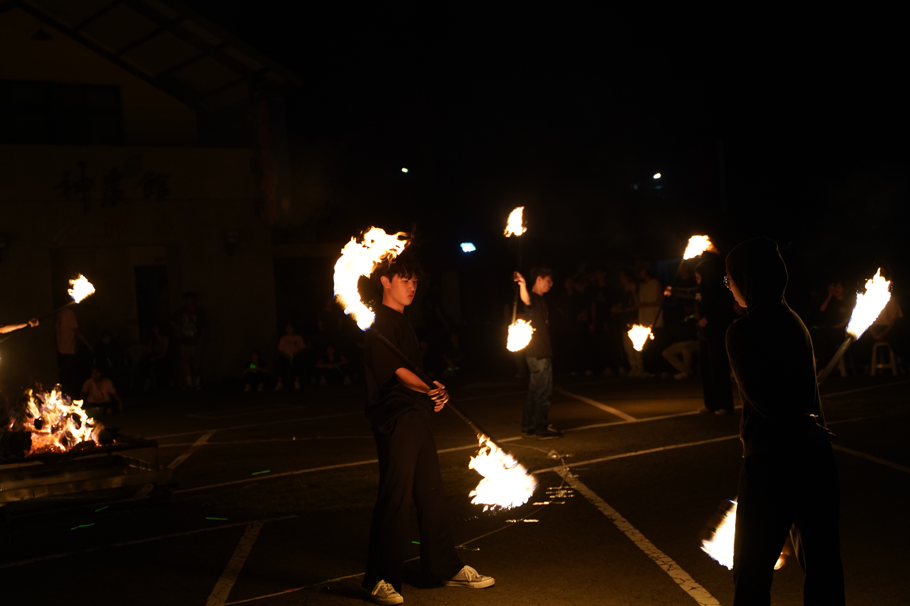
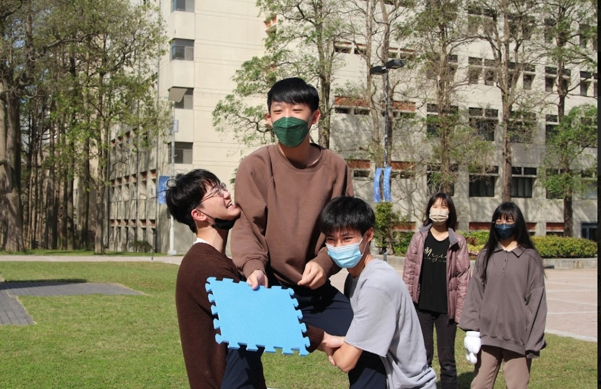
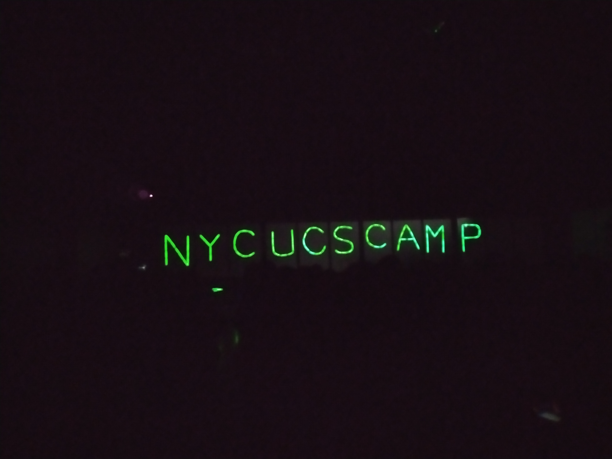
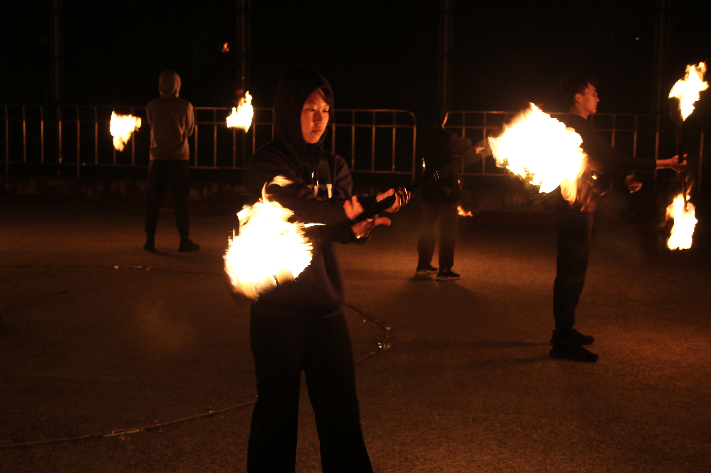
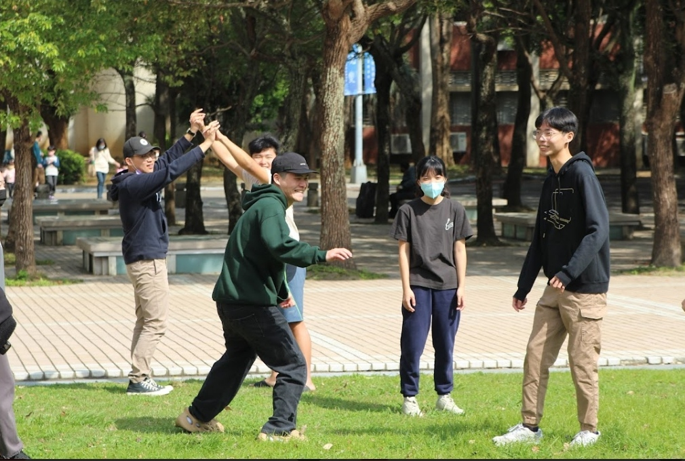
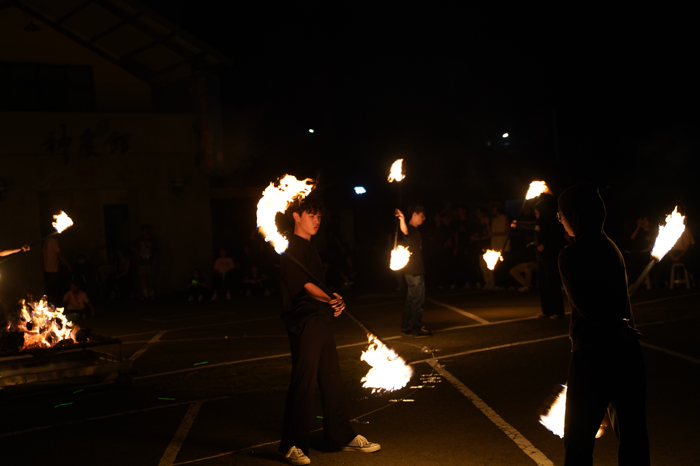
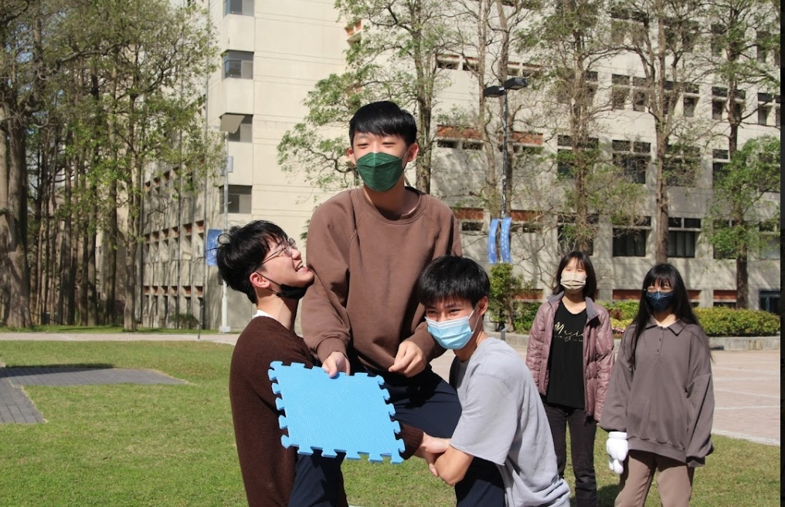
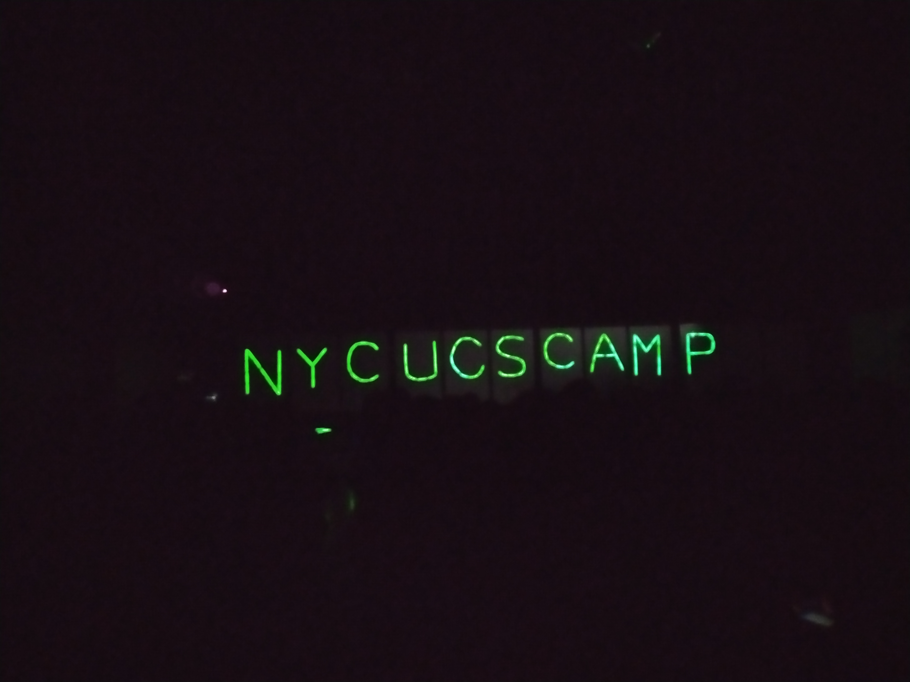
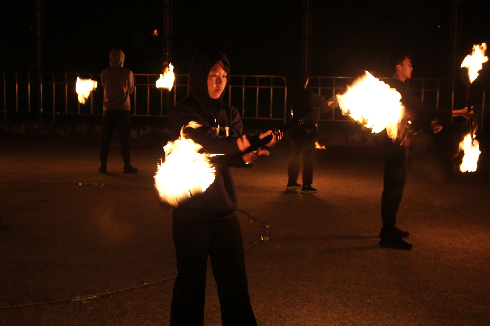
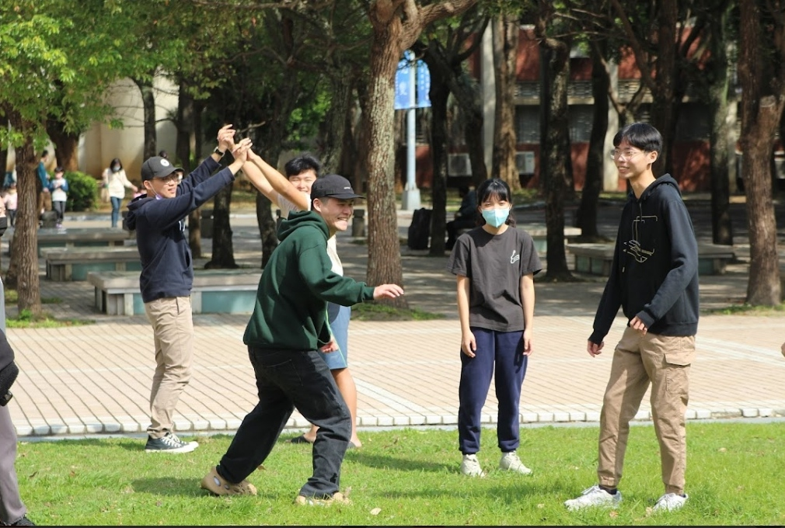

很高興能在大學認識這樣一群人，和我一起玩一起瘋，有問題時也可以一起討論。原本以為上了大學會變邊緣人，沒想到竟然辦了一堆營隊，快要變成活動猴了。
系露營
系露營是大家上大學辦的第一個營隊，是二年級帶著一年級，辦給學長姐們的營隊，一是讓學長姐們有個機會可以再次聚在一起，一起玩一起瘋，暫時離開實驗室和電腦，二是教一年級怎麼辦營隊，培養未來辦營隊的人才。
一年級參加系露營完的印象是學長姊好可怕，每個都和瘋子一樣，但後來跟大家熟了之後才發現其實參加系露營有一個好處就是認識學長姊，這是一個難得的機會可以接觸到更大的學長姐，而不是只有自己同屆而已。聽聽他們在幹嘛，問問他們現在自己所迷茫的事，還有未來有需要幫忙都可以找學長姐，總之認識多一點人總是沒有壞處的。
二年級再參加系露營，我變成了火棍教學，負責火棍的表演，身分的轉變也讓我看到更多之前沒注意到的事，也因為營隊中其他行政都是熟悉的人，所以也可以看到更多行政們再作的事，對營隊的運作也更了解，不再像一年級一樣組長叫我做什麼就做什麼，完全搞不清楚狀況。
迎新宿營
迎新宿營當然就是辦給新生的營隊啦，我在裡面擔任美宣，負責製作道具以及擔任營期的隊輔。雖然每次辦營隊都很累，但真的都會收穫一點東西，過程也都是充滿歡笑的。營期間和一年級新生聊天，彷彿看到過去的自己，一樣迷茫不安，一樣不知所措，於是將自己的經驗分享給小隊員，希望自己的經驗可以幫到他們一點。
資訊逐夢營
是逐夢營不是築夢營，又簡稱資工營，是系上最大的營隊，從大一到研究所都可以來辦，是給高中生的暑期營隊。因為有這麼多人，所以也是認識學長姊的最佳機會，也因為這些人早就辦過無數次營隊，所以資工營算是最成熟最完整的營隊，對各項標準的要求也是最高的，雖然中間因為疫情中斷過，也曾經改成線上的方式，但好在去年又恢復了實體的營隊，讓這個傳統延續下去。
他真的就像一場夢，一個屬於大家的 夏天的夢，有人從實驗室抽空過來練習，有人從公司趕回來開會，大家都一起努力著，為這個營隊付出，看到最終的成果，小隊員開心的笑容，真的很感動。